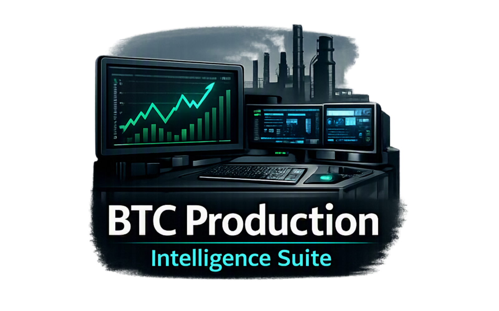
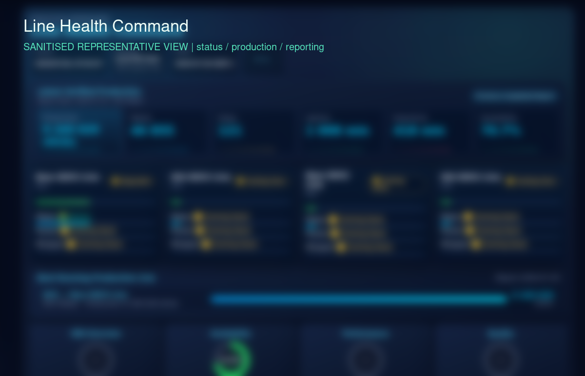
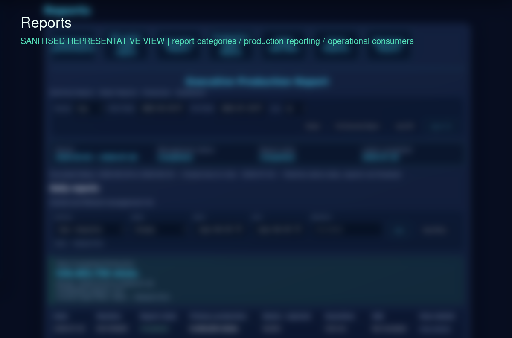
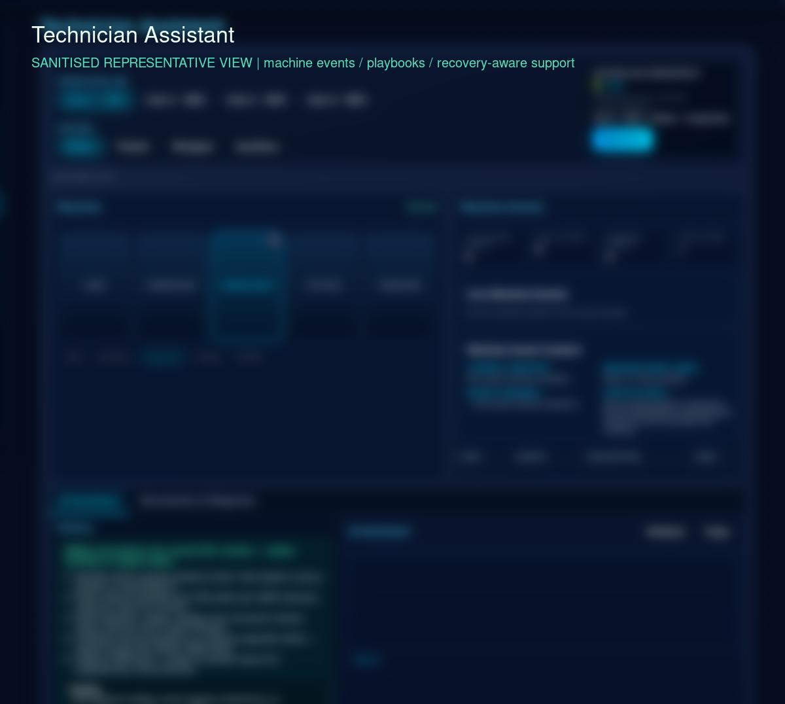

BTC Production Intelligence Suite
BTC Production Intelligence Suite is a modular manufacturing operations platform that brings production status, machine events, shift reporting, QR/Data Matrix workflows, technician activity and operational reporting into a browser-based interface.

Summary
This case study describes the problem-solving shape of a production intelligence platform: collect operational events, validate context, centralise reporting and make useful information available to dashboards, reports and mobile workflows.
Problem and response
Operational information originated from separate machine exports, event data, reports and manual workflows. The engineering task was to collect and validate those sources, retain history, surface current status and make recovery conditions visible without presenting incomplete data as certain.
- Translate machine and operator events into a consistent operational view.
- Support shift reports and production visibility without exposing private records.
- Keep recovery and incomplete data states visible for review instead of silently presenting certainty.
Sanitised architecture
The public diagram represents the data-flow pattern only. It intentionally omits private hosts, ports, credentials, records and proprietary implementation details.
Verified implementation themes
- Python and Flask application services with browser-based dashboards and reporting.
- SQL and SQLite operational data stores, archive and indexing workflows.
- Production and shift reporting, machine-event collection and parsing.
- QR and Data Matrix packet workflows, technician reporting and mobile-facing operational workflows.
- Recovery-aware data movement and centralised operational views.
- The recorded build includes modules for production, reports, machine reports, NX3 Maker reports, QR Matrix, Packet Data Matrix, Technicians, HR / OPS, Stock Control, Chat and Master Control.
Technology lens
Python, Flask, SQL / SQLite, reporting workflows, QR and Data Matrix traceability, technician activity and mobile integration are the public-facing technology themes for this case study.
Sanitised screenshot evidence



Public boundary
This public case study uses sanitised architecture, representative data and privacy-reviewed interface captures. Operational credentials, private records, production values and proprietary implementation details are excluded.
Explore the related integration and traceability patterns.
RELATED: INDUSTRIAL SYSTEMS INTEGRATION